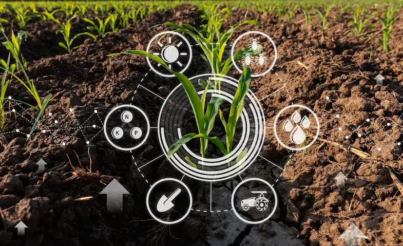

O que é tecnologia na Agricultura?
É todos os tipos de conhecimentos utilizados para aumentar a produtividade na agricultura. Seja através de máquinas, robôs, computadores, drones, dispositivos móveis, aplicativos e similares. Até mesmo a inteligência artificial e a metodologia de dados grandes também fazem parte do conceito de tecnologia na agricultura. As plantações e operações agrícolas de hoje são realizadas de forma bem diferente daquelas praticadas há algumas décadas. Inicialmente, podemos associar este salto de produtividade e gestão de cultivos aos avanços tecnológicos que têm sido aplicados na agricultura.
E como a tecnologia pode ser usada no campo?
A tecnologia chegou no campo para ficar e garantir melhor qualidade e produtividade. Nas fazendas leiteiras, um exemplho é usado cada vez maior de equipamentos e sistemas tecnológicos como sensores de estoques em silos, drones tratadores automáticos, etiquetas de identificação dos animais, GPS, aplicativos, entre outros.

Quais são os benefícios da tecnologia no campo?
A tecnologia na agricultura é um vetor multidirecional de trabalho no agronegócio moderno que visa aumentar a produtividade dos campos e utilizar uma abordagem de gestão inteligente. É a tecnologia agrícola que ajuda os agricultores a aumentar sua renda enquanto mantêm o campo produtivo através de práticas agrícolas eficientes e inteligentes. Esta abordagem aumenta a produtividade do campo com o uso mínimo de fertilizantes químicos através de métodos tradicionais como a rotação de culturas e métodos mais modernos como o monitoramento do rendimento do campo usando tecnologia agrícola e imagens de satélite, aplicações especiais ou software para rastrear o desempenho agrícola remotamente e até mesmo offline.
Como se deu a evolução da tecnologia na agricultura?
O desenvolvimento da tecnologia na agricultura está intimamente ligado à evolução do processo civilizacional e ao florescimento das cidades e do comércio. A inovação tecnológica sempre esteve presente neste campo. Até o início do século XX, o modelo de tecnologia na produção agrícola era em grande parte de subsistência e caracterizado pela baixa produtividade. Os principais avanços tecnológicos foram a fabricação da charrua e o uso da tração animal e este período é denominado Agricultura 1.0. Com o início do uso de máquinas mecanizadas, tratores e máquinas agrícolas começou Agricultura 2.0. A evolução da tecnologia na agricultura ao longo dos últimos 30 anos passou por várias etapas
Referência: https://eos.com/pt/blog/tecnologia-na-agricultura/